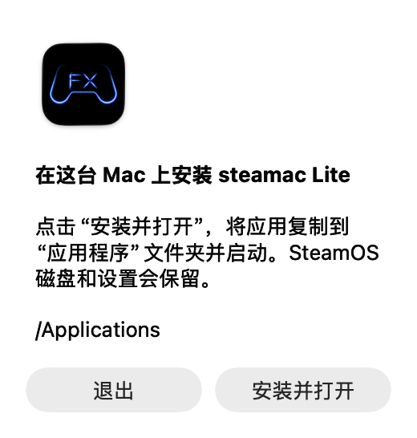

在应用中更新
Lite.9 及更新版本支持应用内更新。从 1.9.8-lite.2 起，每次启动都会检查更新，仅在有新版本时显示更新窗口。
- 打开“检查更新…”
在 Mac 屏幕顶部的 steamac Lite 菜单中选择此项。请使用 Mac 应用的菜单，而非 SteamOS 内的 Steam 菜单。
- 点击“更新”
出现新版本时点击“更新”，等待下载和文件验证完成。
- 点击“安装并重新打开”
先保存游戏中需要保留的内容。应用会等待 SteamOS 退出，再替换应用并打开新版本。
更新会替换 Mac 上的应用本体。SteamOS 磁盘、已安装的游戏和现有设置都会保留，无需为更新新建磁盘。
使用 DMG 更新
如果正在使用 Lite.8 或更早的版本，或者应用无法启动，请使用以下步骤。
- 退出正在运行的 steamac Lite
先保存游戏中需要保留的内容，再退出 steamac Lite。如果应用正在退出，请等待完成。
- 下载最新 DMG
点击下方按钮下载 Mac 版 DMG。GitHub 的“Source code”是开发用源代码。
- 点击“安装并打开”
打开 DMG，再打开其中的 SteamAC Lite.app。出现提示时点击“安装并打开”，即可将已安装的应用替换为新版本。


放大截图 ↗BOOTH 网络安装程序也会下载最新版应用。请将安装位置设为现有应用所在的文件夹。
更新后检查麦克风权限
从 Lite.13 开始，首次启动和每次更新后的首次启动都会显示麦克风确认提示，即使已获得权限也会显示。 在 1.9.8-lite.1 中，可在「设置 → 声音 → 输入麦克风」选择麦克风。选择会保存，不会更改 Mac 的默认输入设置。设置窗口支持滚动和调整大小。
应用的确认提示和 macOS 的权限确认框是两个不同的界面。是否显示系统权限确认框由 macOS 决定。
如果仍然没有输入
- 在 Mac 的“系统设置 → 声音 → 输入”中选择所需麦克风，检查输入电平是否变化。steamac Lite 使用 Mac 的默认输入设备。
- 在“系统设置 → 隐私与安全性 → 麦克风”中检查 steamac Lite 的权限。如果更新后无法使用，即使权限已开启，也可尝试关闭后重新开启。
- 在 steamac Lite 的“设置 → 声音”中点击“重新检查”。也请检查 Steam 的麦克风测试和 VRChat 中选择的输入设备。
在同一版本中完成确认后，不会反复显示此提示。也可以随时在“设置 → 声音”中查看权限。
更新失败时
没有更新通知
从 1.9.8-lite.2 起，每次启动都会检查更新，仅在有新版本时显示提示。请确认「设置 → 通用」中的自动检查已开启。也可通过 steamac Lite → 检查更新… 手动检查，包括已跳过的版本。Lite.8 及更早版本请使用 DMG 更新。
下载、验证或替换失败
请检查网络连接和 Mac 的可用空间后重试。如果仍然失败，请退出正在运行的应用并使用 DMG 更新。如果持续出现验证错误，请在求助时附上错误信息。
更新后应用无法启动
请打开最新 DMG，并使用已安装到“应用程序”文件夹中的应用。如果 macOS 提示确认打开，请检查来源并按屏幕指引操作。如果仍然无法打开，请提供下列信息。
如果仍未解决
请尽量提供下列信息，通过 GitHub Issues 或 BOOTH 联系。
- Mac 型号、内存容量及 macOS 版本
- 更新前后的应用版本号
- 使用了应用内更新、GitHub DMG 还是 BOOTH
- 停留的界面、错误信息，以及可提供的截图
- 麦克风问题请注明内置、USB、蓝牙等类型，以及 Mac 输入电平是否变化